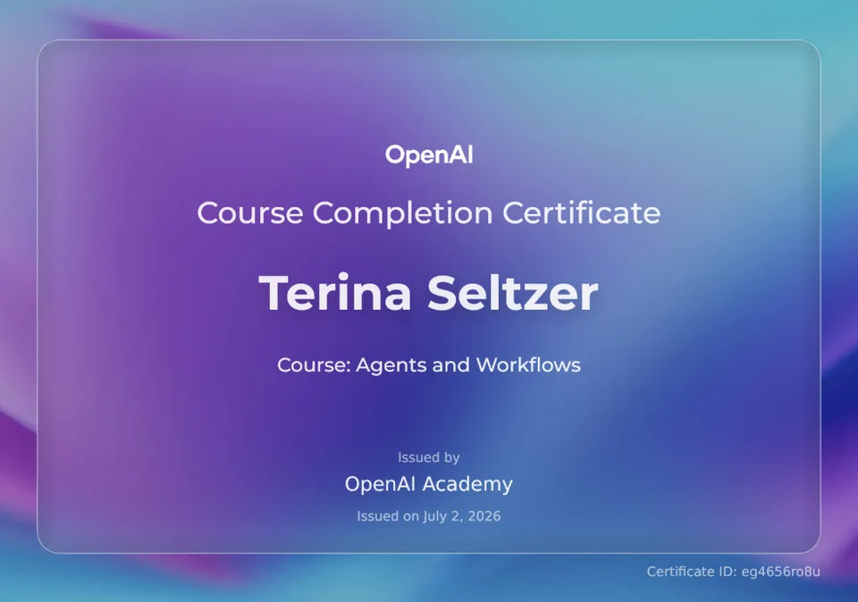
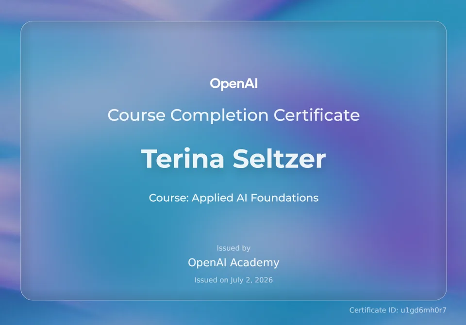
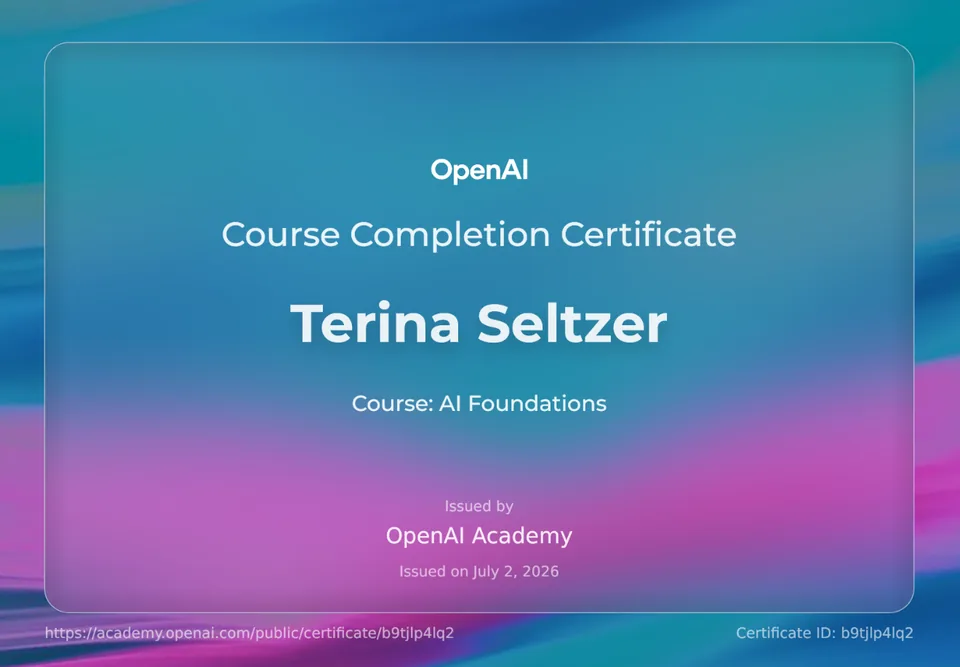
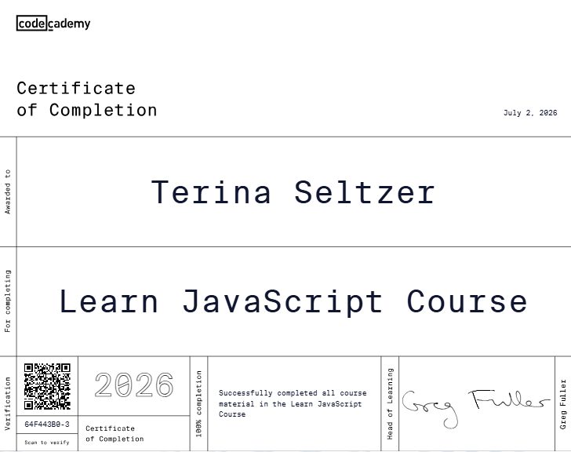
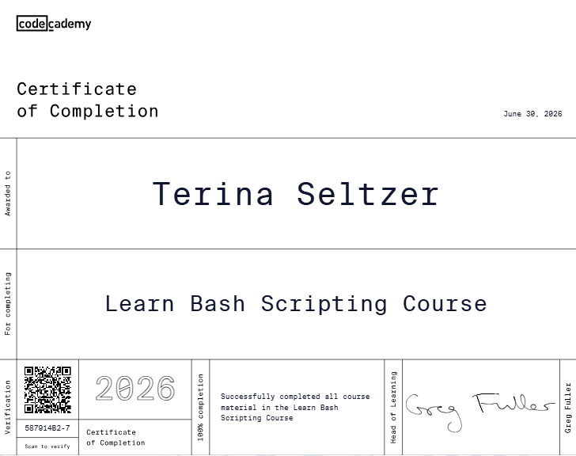
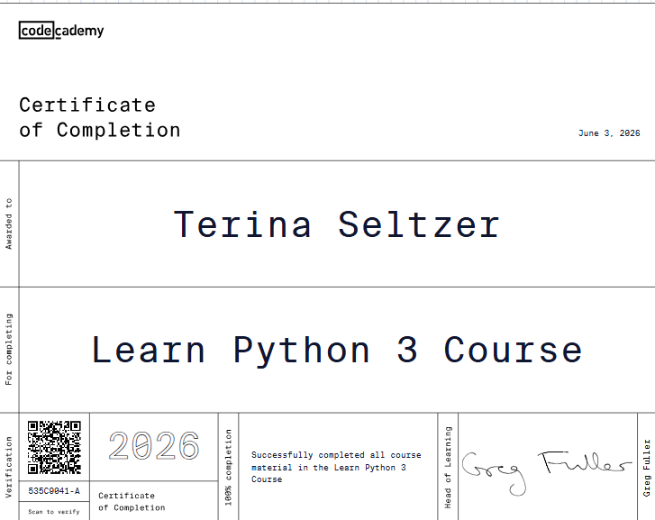
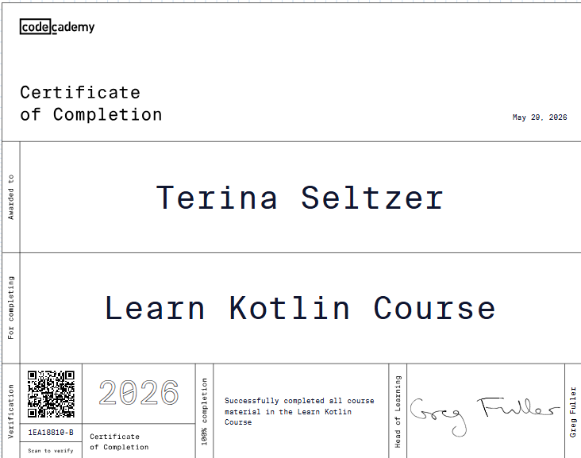
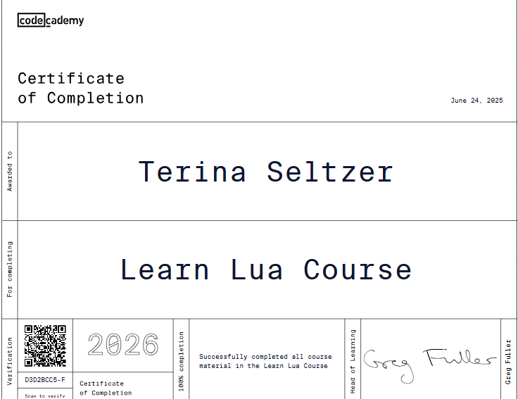

Terina Seltzer
Software Engineer, Full-Stack Developer, Android Developer, Java Developer, Systems Administrator, Database Developer
Software Engineer • Full-Stack, Mobile, and Database Development
Software engineer with more than 10 years of experience in systems administration, network support, and enterprise technology. Developed a multi-organization veterinary-records platform using Java, Spring Boot, Hyperledger Fabric, Docker, and a three-node Raft cluster.
About Me
I am a software engineering graduate with more than a decade of experience supporting enterprise systems, networks, servers, and end users in military and professional environments.
My background in systems administration shaped how I approach software development. I value reliability, security, maintainability, clear documentation, and practical solutions to real-world problems.
After taking time away from the traditional workforce for family caregiving and homeschooling, I returned to technology and earned my Bachelor of Science in Software Engineering from Western Governors University. During that transition, I built full-stack, Android, database, and blockchain applications using Java, Kotlin, Python, JavaScript, TypeScript, SQL, Spring Boot, React, Angular, Django, and Hyperledger Fabric.
I am seeking a software development opportunity where I can combine my engineering education, infrastructure experience, and problem-solving skills to build dependable software and contribute to a collaborative team.
10+
Years in IT
B.S.
Software Engineering
Project+
Certified
AWS CCP
Certified
Featured Projects
Selected web and data projects.
Applications that demonstrate full-stack development, mobile engineering, database design, API integration, accessibility, and practical problem-solving.
Blockchain Veterinary Records Management
A multi-org blockchain platform on Hyperledger Fabric. Clinics and pet owners share animal records and transfer ownership, with every transaction cryptographically authorized.
Technologies:Java and Spring Boot REST API integrated with Hyperledger Fabric. H2, Prometheus/Grafana, Docker, and a JavaScript frontend.
Highlights:
- Eliminated a single point of failure by using a 3-node Raft cluster.
- Java chaincode manages animal registration, medical records, and ownership transfers, restricting each transfer to the animal's verified current owner.
- A Spring Boot REST API and web UI let clinics and owners interact with the blockchain without needing Fabric CLI tools.
Task Manager
A full-stack productivity application that organizes tasks through a six-quadrant prioritization system. Users can create, update, schedule, and move tasks through an interactive drag-and-drop interface.
Technologies: React, TypeScript, Vite, Express, MySQL
Highlights:
- Developed a REST API for task creation, updates, scheduling, and progress tracking.
- Implemented drag-and-drop task prioritization across six workflow quadrants.
- Added recurring tasks, rewards, and a task mascot to support engagement.
Shepherd Pet Adoption
An Android application designed to help animal rescues manage adoptable pets and volunteer participation from one mobile platform.
Technologies: Java, Kotlin, Android, Firebase Firestore, Gradle
Highlights:
- Created category-based browsing for dogs, cats, birds, reptiles, and other animals.
- Implemented pet records, volunteer workflows, validation, and role-based access.
- Designed a mobile-first interface focused on clear navigation and usability.
Seltzer's Rocking Horses Inventory System
A Java inventory-management application for tracking rocking horse products, in-house parts, and outsourced parts.
Technologies: Java 21, Spring Boot, Thymeleaf, Spring Data JPA, Maven, H2
Highlights:
- Developed create, search, update, purchase, and delete workflows.
- Modeled relationships between products and component parts.
- Applied validation rules to protect inventory integrity.
Coding Creations
A Django-based educational website for screen-free coding activities and printable logic worksheets for children.
Technologies: Python, Django, HTML, CSS, JavaScript
Highlights:
- Organized educational products through clear curriculum and category navigation.
- Created responsive product pages and calls to action.
- Combined coding education with child-friendly visual design.
World Map and Statistics
An interactive data application that retrieves country statistics and presents them through a searchable world map.
Technologies: JavaScript, API Integration, HTML, CSS
Highlights:
- Integrated World Bank API data for population, income, and GDP information.
- Added interactive country selection, search, and map controls.
- Presented external data through responsive, theme-aware information panels.
Color Wheel Explorer
A browser-based color planning tool that helps users create accessible palettes for websites and applications.
Technologies: JavaScript, HTML, CSS, SVG
Highlights:
- Built an interactive HSL color wheel and reusable palette slots.
- Added color harmony generation and role-based color assignment.
- Implemented WCAG contrast checks, CSS export, and a live website preview.
West Virginia Website
A multi-page static tourism website for West Virginia, featuring a custom visual identity rooted in Appalachian heritage.
Technologies: JavaScript, HTML, CSS
Highlights:
- Designed a cohesive site-wide visual system including hand-crafted SVG dogwood banners and a consistent navy, gold, and parchment color palette across six pages.
- Built interactive features including a hero slideshow, text-resize slider, Read More toggles, and a clickable SVG county map with hover tooltips.
- Integrated Chart.js demographic pie charts alongside a state facts table and alternating city profile layouts on the About page.
Skills
Software development and infrastructure skills.
Experience across programming languages, frontend and backend development, Android applications, databases, cloud tools, and enterprise systems.
Languages & Core Web
Programming languages used across web, mobile, backend, scripting, and database projects.
Frontend
Responsive, accessible interfaces built with modern JavaScript frameworks and REST API integration.
Backend
Server-side applications, REST APIs, validation, and database-backed business logic.
Mobile
Native Android applications with database integration, validation, role-based access, and mobile-first interfaces.
Databases
H2, Firestore, relational modeling, queries, stored procedures, and triggers.
Blockchain & Observability
Permissioned blockchain development, distributed consensus, monitoring, metrics, and containerized environments.
Tools & Cloud
Development tools, version control, build systems, virtualization, and foundational AWS cloud knowledge.
Systems & Infrastructure
Diagnosed and resolved hardware, software, and network issues, and provided solutions.
Professional Experience
A career spanning military and enterprise systems administration, technical support, software engineering education, and independent application development.
Independent Software Developer
– Present
Developing full-stack, mobile, and database applications that address practical needs in productivity, education, animal rescue, and inventory management.
Highlights
- Built a full-stack task-management platform using React, TypeScript, Express, and MySQL, including drag-and-drop prioritization and recurring task workflows.
- Developed an Android pet-adoption and volunteer-management application using Java, Kotlin, and Firebase Firestore.
- Created a Django website for coding-education products and printable learning activities.
- Built Java and Spring Boot applications using object-oriented design, data validation, and relational persistence.
Software Engineering Student
–
Highlights
- Earned a Bachelor of Science in Software Engineering with coursework in full-stack development, software architecture, databases, testing, and secure application design.
- Built applications using Java, Python, JavaScript, TypeScript, SQL, Android, Spring Boot, Angular, and React.
- Designed relational databases with normalized schemas, queries, stored procedures, triggers, and reporting workflows.
- Applied object-oriented programming, version control, validation, debugging, and software testing throughout project development.
Family Caregiving and Homeschooling
–
Highlights
- Managed medical, therapy, educational, and household schedules while coordinating with healthcare providers, educators, and support professionals.
- Adapted plans and routines in response to changing needs, deadlines, and unexpected challenges.
- Managed eight years of homeschooling through individualized lesson planning, curriculum selection, instruction, schedule coordination, and progress tracking.
- Strengthened organization, communication, problem-solving, advocacy, and long-term planning skills.
System Administrator & PC Support
–
Virginia Tech Library Systems
Highlights
- Administered Windows and Linux servers, user accounts, permissions, system updates, network services, and performance monitoring.
- Maintained network and computing infrastructure supporting reliable access to organizational systems and resources.
- Diagnosed hardware, software, operating-system, and network-connectivity issues through root-cause analysis.
- Configured devices, documented solutions, supported end users, and escalated complex incidents when necessary.
Network & System Administrator
–
US Air Force
Highlights
- Administered secure network infrastructure, servers, routers, switches, firewalls, and user systems in operational environments.
- Diagnosed and resolved network and system failures to restore mission-critical services.
- Performed system maintenance, patching, account administration, security monitoring, and technical documentation.
- Trained up to eight personnel in server administration, troubleshooting, and regional systems support.
- Supported base-level web applications using HTML, CSS, and ColdFusion.
- Held an active TS/SCI security clearance during military service.
Education
Academic Foundation.
Formal software engineering education supported by extensive hands-on experience in systems administration, networking, troubleshooting, and secure technology environments.
Western Governors University
–
Bachelor's Degree
Software Engineering
College of the Air Force
Associate's Degree
Information Technology
Certifications
Verified engineering credentials.
Professional certifications and technical coursework in cloud computing, project management, frontend and backend development, programming, databases, and applied artificial intelligence.


Online Learning








Contact
Let’s Connect
I am interested in junior software engineering, full-stack development, mobile development, and application-support opportunities where I can contribute strong technical troubleshooting and software-development skills.
Use the contact form, connect with me on LinkedIn, or review my work on GitHub.